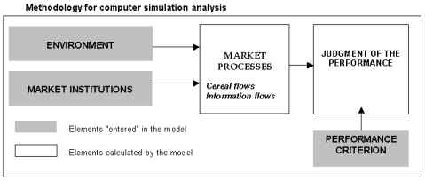

|
MARKETS : Markets as communication systems
Assessing the performance of different market institutions using computer simulationsFranck Galtier, Cirad. The famous work by F. Hayek, L. Hurwicz, J. Stiglitz, and S. Grossman showed that market performance depends on an ability to ensure the dissemination of information between economic stakeholders. As information is passed on by the processes of negotiation and trade, the type of trading network plays a crucial role since it determines the architecture of the channels through which information flows. Recent work has analysed this aspect using mathematical tools (Kirman 1983; Ioannides 2002) or computer tools (Kirman and Vriend 2000; Kerber and Saam 2001). The work described here falls into the second category. It involved a comparative analysis of the performance of two modes of wholesale trade organization widely used in agricultural commodity chains of the developing countries: network trading and marketplace trading. Store of a wholesaler in Niono (Mali) These two institutions function very differently. In the case of a trading network, each wholesaler in a consumer zone (CW) has correspondents (PW) in the different production zones (one per zone) and, in principle, should only procure supplies from his correspondents. Thus, when a CW wishes to buy maize or millet, he contacts his correspondents in different locations (usually by telephone, or by mail delivered by truckers or taxi drivers), centralizes the sale proposals made by each of them (in terms of price, quality, delivery date, terms of payment, etc.) and enters into transactions with the one making the most interesting bid. The entire process of negotiation and exchange takes place at a distance. In the case of wholesale markets, CWs circulate in the production zones, where they meet PWs in the marketplaces (on market day). The dissemination of information is therefore very different in the two types of institution.
Discussion on the relative performances of these two institutions has major repercussions for public policies. Indeed, States and funding agencies tend to favour wholesale markets, which are judged to be preferable for ensuring market "transparency". It is this idea that we have attempted to test here, by analysing whether any situations exist where trading networks prove to be better communication systems than wholesale markets.  The analysis was based on computer simulations using a multi-agent system (MAS). The approach consisted in "entering" an (environment, market institution) pair in the model, simulating the induced exchange processes and measuring the efficacy of the resource allocation obtained in that way (in accordance with a previously defined performance criterion). This approach (shown in the following graph) makes it possible to test the comparative efficacy of wholesale trading networks and wholesale markets in different environments (to see their respective scope of relevance).In the scenarios performed, the environment was modelled from two sets of variables: the degree to which the activity was concentrated on the level of production zone wholesalers (PWs) and the variability in supplies to those wholesalers. The market institutions represented were trading networks and wholesale markets, along with an imaginary "perfect" institution, i.e. one which enabled total market transparency and optimum allocation of resources. This last institution was used as a control to measure the efficiency of the other two. Lastly, the performance criterion adopted was the minimization of rationing in consumption localities. The simulations involved 150 different scenarios (50 environments and 3 market institutions). Each of the 150 scenarios was simulated over 100 time periods, approximately corresponding to two farming seasons, taking a model time period to be a week in reality (numerous marketplaces operate on a weekly basis). A thousand simulations were carried out for each scenario, in order to neutralize the effect of the random variables introduced into the model. The main results were as follows :
This result is contrary to the preconception whereby wholesale markets are better communication systems than trading networks. This should logically lead to a total rethink of public policies in this field (which are currently geared towards promoting wholesale markets). Computer modelling of market processes proved to be relevant in explaining how an efficient allocation of resources can result from the decentralized interactions of numerous individuals among whom the information is dispersed. This approach thus complements other tools such as the games theory or market experimentation [Smith 1982; Roth 2001]. Its strong points are that it enables an analysis of market processes within which transactions take place "out of balance" (which is difficult with the games theory), and involves numerous stakeholders and quite long time periods (which experiments do not allow). This work also opens up a certain number of research prospects. One of them consists in including elements related to the "language" of the market institutions. Indeed, The messages (embodied in the purchase and sale proposals of the players) are expressed according to rules that define how the different trading parameters should be qualified (price, quantity, quality, payment and delivery deadlines, and delivery site) and how they should be negotiated. These rules (which constitute the "market language") can also be assessed using computer simulations. BibliographyAMSELLE, J.-L. (1977). Les commerçants de la savane : histoire
et organisation sociale des Kooroko (Mali). Paris, Anthropos. References...soon !
|

 Wholesale markets in Kétou (Bénin)
Wholesale markets in Kétou (Bénin)